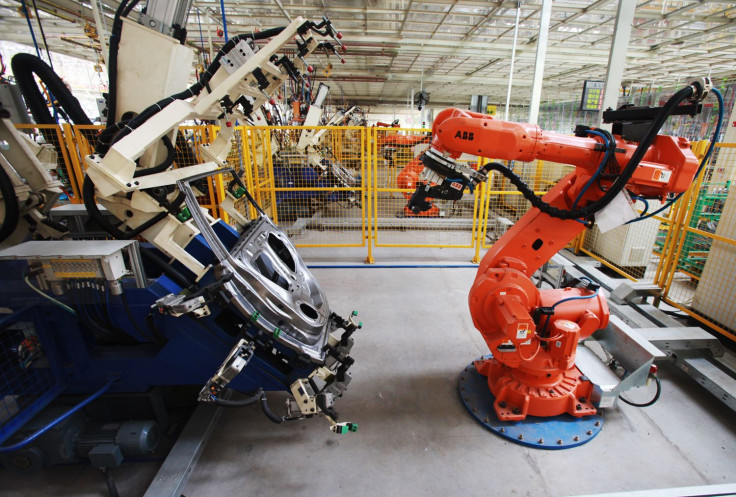
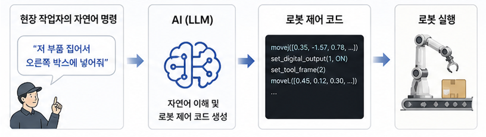
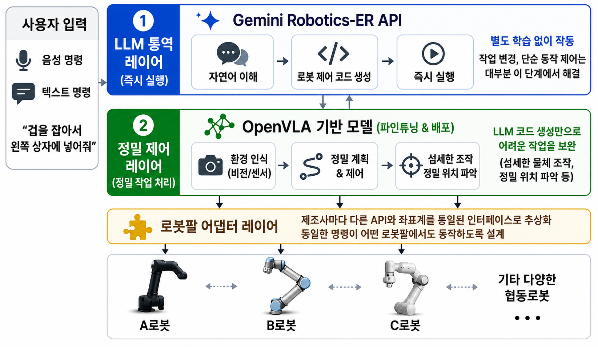
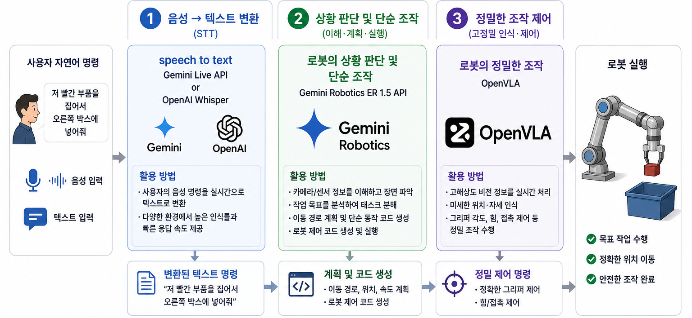

자연어 명령 한 마디로 협동로봇을 즉시 운용하는 제조사 독립적 SaaS 플랫폼
연구실에서 마주친 불편함이, 어떻게 산업 현장의 문제로 이어졌는가
VR 기기 · ROS2 · Isaac Sim을 연결해 로봇팔을 제어하기까지, 컴공 전공자에게도 환경 설정이 길고 복잡했습니다.
"실제 기업·공장에서 로봇을 활용할 때는 어떨까?" 중소 제조현장은 작업이 바뀔 때마다 SI업체를 섭외해야 하고, 그 사이 생산이 멈춥니다.
로봇을 다루는 언어가 사람의 언어와 너무 동떨어져 있다는 것. LLM이 그 간극을 좁힐 수 있다.

두 개의 레이어와 하나의 어댑터로 구성된 단순한 구조.
음성·텍스트 명령을 Gemini Robotics-ER API가 해석해 제어 코드를 즉시 생성·실행. 별도 학습 없이 작동.
섬세한 물체 조작·정밀 위치가 필요한 경우, OpenVLA 모델을 사용자 환경에 맞게 파인튜닝해 배포.
Indy7 · UR · Franka의 서로 다른 API와 좌표계를 하나의 인터페이스로 통일.


로봇은 좌표·관절 각도·제조사별 API로 말하고, 작업자는 "저 부품 집어서 오른쪽 박스에 넣어"라고 말한다. 그 사이를 메우려 사람이 필요했다.
이 통역 역할을 AI가 대신한다. 자연어를 제어 코드로 즉시 변환해, 전문 인력 없이도 현장 작업자가 직접 로봇 작업을 바꾸고 운용한다.
사용자가 실제로 경험하는 시나리오와, 우리만의 차별 포인트
Gemini Live API 또는 OpenAI Whisper로 현장 작업자의 음성 명령을 텍스트로 변환합니다.
장면을 이해하고 태스크를 분해해 제어 코드를 생성합니다. 대부분의 명령이 이 단계에서 해결.
코드 생성만으론 어려운 파지·조립·삽입을 위해 사용자 환경에 맞춰 파인튜닝하여 배포.

진행 중인 작업을 일시 정지하고, 명령을 재해석한 뒤 빨간 + 파란 부품을 모두 담는 것으로 자동 재계획·재개합니다.
정밀 접촉 작업으로 판단되면 사용자에게 안내합니다. "시범 동작 3회를 보여주시면 학습 후 실행합니다." 시범 학습 후 자동 실행.
실패 원인 분석을 자동으로 보여줘 다음 시도에 활용합니다.
버튼 한 번이면 동일 작업을 다시 실행할 수 있습니다.
비용을 투명하게 추적하고, 작업별 단가도 함께 확인합니다.
| 항목 | 기존 방식 | 우리 서비스 |
|---|---|---|
| 새 작업 추가 | 엔지니어 외주 · 수백만 원 · 수 주 소요 | 말 한마디 · 즉시 실행 |
| 필요 지식 | 로봇 프로그래밍 필수 | 없음 (자연어) |
| 로봇팔 변경 | 처음부터 재프로그래밍 | 모델 선택만 변경 |
| 야간 무인 운영 | 사전 프로그래밍된 작업만 | 새 상황에 자율 대응 |
※ 글로벌 사례: Mbodi (자체 하드웨어 종속), Physical Intelligence π0 (연구 단계 범용 모델), Zeon (연구실 한정). 국내에는 동급 서비스가 부재.
Indy7 · UR · Franka의 다른 API와 좌표계를 하나의 인터페이스로 통합. 사용자는 어떤 로봇팔을 쓰든 같은 방식으로 명령합니다.
기본 티어: Gemini Robotics-ER 기반, 학습 없이 즉시 작동.
프리미엄 티어: OpenVLA 파인튜닝으로 정밀 조작 커버. 사용자가 필요에 따라 선택.
국내 1위 협동로봇 Indy7을 첫 타깃으로, 한국어 명령 처리와 국내 제조 현장 특화. 글로벌 영어/해외 로봇 중심 서비스 사이의 빈 공간을 선점합니다.
활용 기술 스택, 예상되는 도전 과제, 그리고 5월부터 11월까지의 로드맵
※ 비전공자 팀원도 학습 일정에 따라 단계적으로 익혀나갈 예정입니다.
카메라 캘리브레이션 오차, 작업 반경 초과, 그리퍼 각도 오류 등 물리적 제약과 충돌. 수 mm 오차도 파지 실패로 이어집니다.
Isaac Sim에서 IK 해 존재·충돌을 사전 검증 → RealSense 결과 확인 → 실패 시 자동 재시도. ChArUco 보드 기반 주 1회 캘리브레이션.
"오른쪽 부품 집어"는 사람에겐 명확하지만 LLM에겐 모호. 제조 현장에선 모호한 동작이 안전사고로 이어질 수 있습니다.
실행 전 의도 재확인(confirmation step) 기본 탑재. confidence threshold 이하 명령은 자동으로 추가 질문. 4주간 모호 명령 케이스를 직접 수집해 프롬프트 엔지니어링.
Indy7(IndySDK) · UR(URScript) · Franka(libfranka)는 각각 완전히 다릅니다. 어댑터 레이어가 흔들리면 서비스 전체가 흔들립니다.
해결: 대회 기간엔 Indy7 단일 어댑터 안정화 → UR 추가 순서. ROS2 MoveIt2를 중간 계층으로 활용해 차이를 흡수. 뉴로메카 공식 문서 + 멘토링 적극 활용.
하나만 해도 어려운 영역을 동시에 처음 다루기 때문에, 어디서 문제가 생겼는지 파악 자체가 난관입니다.
해결: 처음엔 Isaac Sim 가상 환경에서 모든 기능을 검증. 시뮬은 되는데 실물에서 안 되면 → 하드웨어 문제, 시뮬에서도 안 되면 → 소프트웨어 문제로 빠르게 절단. 워크샵·세미나로 병목 조기 해결.
| 기간 | 팀원 A · 로봇 제어 | 팀원 B · AI/백엔드 | 팀원 C · 프론트/인프라 | 마일스톤 |
|---|---|---|---|---|
| 5–6월 | Isaac Sim 환경 + Indy7 연동, 블록 파지 검증 | Gemini ER 연결, 자연어→코드 파이프라인 | FastAPI 기본 구조, Supabase DB 설계 | 블록 파지 데모 |
| 7–8월 | 캘리브레이션 자동화, 복수 태스크 구현 | 클라우드-엣지 분리, confidence 검증 로직 | 대시보드 · 이력/결과 시각화 | 3종 작업 전환 |
| 9–10월 | UR5 어댑터, 안전장치 구현 | OpenVLA 파인튜닝, 음성 입력 | 음성 UI 연동, 비전문가 테스트 환경 | 2기종 동일 명령 |
| 11월 | 실제 분류 작업, 현장 안정성 검증 | 전체 파이프라인 최적화·지연 최소화 | 라이브 테스트, 발표 자료 | 라이브 테스트 통과 |
SI업체 의존 비용·대기 시간이 대폭 감소합니다. 다품종 소량생산 환경에서 로봇 활용도가 높아지고, 다양한 로봇팔을 하나의 인터페이스로 운용하는 통합 플랫폼으로 발전할 수 있습니다.
로봇 전문 인력이 없는 중소기업도 자동화에 진입하게 되어, 대기업과의 자동화 격차를 줄입니다. 나아가 거동이 불편한 사용자가 음성으로 로봇팔을 제어하는 보조 도구, 장애인의 자립 지원 도구로 확장될 가능성을 가집니다.
SirLab — 한동대학교 AI컴퓨터전자공학부
로봇을 다루는 언어와 사람의 언어 사이의 간극을,
AI로 메우는 가장 빠른 길.